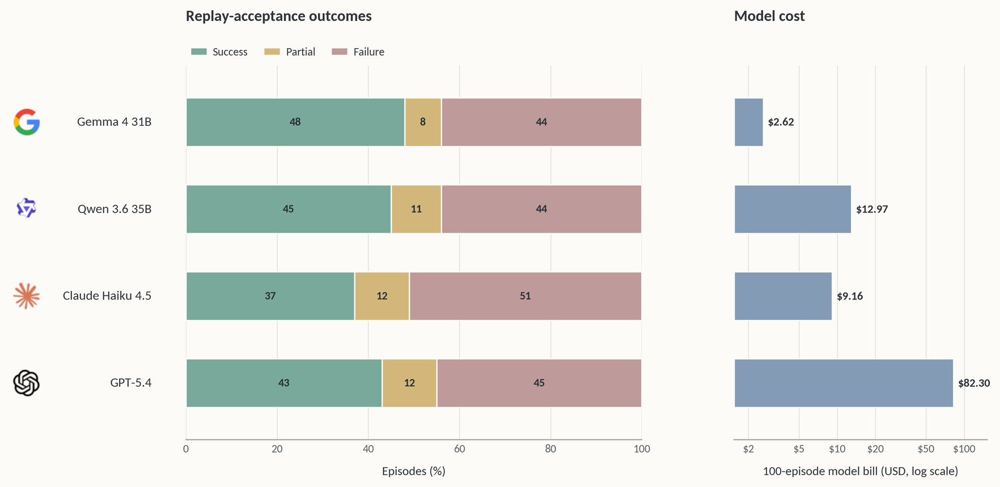

Agentic Real2Sim: Physics-based World Modeling with Vision-Language Agents
한 줄 요약 (TL;DR)
실제 로봇 상호작용 영상(DROID 등)을 비전-언어 에이전트로 자동 분석해 시뮬레이션 디지털 트윈(에피소드 트윈)으로 변환하는 통합 파이프라인. 4개의 전문 에이전트(시각처리·물리사전추론·장면준비·그래스프최적화)가 SAM 3/SAM 3D/FoundationPose 등을 도구로 호출해 기하·포즈·재료·질량을 복구하고 MuJoCo 트윈을 생성. DROID-100에서 48/100 성공 + 8/100 부분(오픈 31B VLM 기준, 총비용 $2.62), GPT-5.4 대비 31.4× 저렴하면서 유사한 재생 성공률. 강체 조작뿐 아니라 변형 객체(PhysTwin)·휴머노이드(BFM-Zero, Unitree G1)까지 동일 계약으로 확장.
1배경 · 문제의식
로봇 정책 학습·평가에는 대규모 시뮬레이션이 필수지만, 실세계 로봇 영상 데이터를 시뮬레이터에서 재현 가능한 디지털 트윈으로 만드는 작업은 지금까지 수작업이었다. 각 에피소드마다 객체 감지, 3D 메시 복원, 6-DoF 포즈 추적, 재료·질량 추정, 카메라·로봇 베이스 캘리브레이션이 필요해 확장이 어렵다. 저자들은 이 전 과정을 비전-언어 에이전트가 도구를 호출하며 자동 수행하도록 만들고, DROID 규모(100 에피소드)에서 검증한다.
2핵심 Contribution
- DROID 에피소드 → MuJoCo 트윈 변환 파이프라인 — 시각처리·물리사전추론·장면준비·시뮬레이터기반 그래스프 최적화의 4개 에이전트가 파이프라인을 이룬다.
- 다중 VLM 백엔드 지원 & 비용 효율 — 오픈 웨이트 31B VLM(Gemma 4)이 proprietary 대형 모델과 유사한 재생 성공률을 내며 31.4× 비용 절감. 프론티어 모델 의존 없이도 스케일 가능.
- 도메인 확장성 — 동일 에피소드 계약(episode contract) 위에서 DROID 강체, PhysTwin 변형 객체, BFM-Zero 휴머노이드까지 커버.
3Method
에피소드 트윈 표현
각 에피소드를 𝒯=(𝒪, 𝒜, 𝒢, 𝒮1:T, Θ, ℬ, ℳ) 튜플로 정의: 실제 관찰 𝒪, 액터/엔드이펙터 𝒜, 기하·외형 자산 𝒢, 시뮬레이터 상태열 𝒮1:T, 물리·정렬 매개변수 Θ, 시뮬레이터 백엔드 ℬ, 메트릭 ℳ. 이 계약을 공유 폴더 구조에 저장해 강체·변형·휴머노이드 어댑터가 재사용한다.
4개 전문 에이전트 & 도구 호출
| 블록 | 도구 | 스킬 | 목적 |
|---|---|---|---|
| 객체 발견 | — | object_discovery, object_relevance | 장면 객체 나열 & 작업 관련 필터 |
| 분할 | SAM 3 | keyframe + mask critic | 깨끗한 프레임 선택 & 마스크 |
| 기하 | SAM 3D, mesh_scale | scale_critic | 메시 재구성 & 실제 크기 설정 |
| 포즈 추적 | FoundationPose | tracking_critic | 6-DoF 포즈 추적 |
| 물리 사전추론 | — | material_classify | 재료·질량 추론 |
| 장면 준비 | calibration, base-pose opt. | camera_select, ground_ref | 카메라·바닥·로봇 베이스 배치 |
| 그래스프 최적화 | grasp sweep | — | 객체 배치 후 시뮬레이터 기반 그립 검증 |
Table 1을 요약. 각 스킬은 VLM이 critic 역할로 결과를 점수화해 실패 시 재실행하는 self-correction 구조.
확장 어댑터 — PhysTwin & BFM-Zero
PhysTwin 어댑터는 로프·천·탄성 재료 등 변형 객체를, BFM-Zero 어댑터는 Unitree G1 휴머노이드 로컬로모션(LAFAN1에서 리타겟팅)을 동일 계약에서 지원. 공유 폴더 구조·시각적 증거·구조화 재생 메트릭을 재사용한다.
4실험 결과
재생 성공 메트릭
VLM 판사가 시뮬레이션 렌더 vs 실제 키프레임을 비교해 목표 객체 정체성 · 최종 위치 · 행동 유사성 · 그리퍼 위치 4축으로 10점 만점 채점. ≥8/10 성공 7/10 부분 ≤6/10 실패.
DROID-100 스케일 변환 (Table 2 / Fig 3)
| VLM 백엔드 | 성공 | 부분 | 실패 | 총 비용 (USD) | 상대 비용 |
|---|---|---|---|---|---|
| Gemma 4 31B (오픈) | 48 | 8 | 44 | $2.62 | 1.0× |
| Qwen 3.6 35B (오픈) | 45 | — | — | $13.10 | 5.0× |
| Claude Haiku 4.5 | 37 | — | — | $9.17 | 3.5× |
| GPT-5.4 | 43 | — | — | $82.30 | 31.4× |
오픈 31B가 GPT-5.4를 성공률에서 앞서며 비용은 1/31 수준. proprietary 프론티어 모델 의존 없이도 대규모 Real2Sim 가능함을 시사.
변형 & 휴머노이드 확장 (Fig 4)
PhysTwin 스타일 로프/천/탄성 재료 에피소드 변환 성공. Unitree G1 휴머노이드에 대해 LAFAN1 모션 캡처를 리타겟팅해 BFM-Zero 상에서 재생.
5Ablation (주요 발견)
- 오픈 vs 프론티어 VLM: Gemma 4 31B가 GPT-5.4보다 성공 수(48 vs 43)에서도 앞서며, 비용은 3% 수준. Real2Sim에서 시각 도구 호출·critic 판단은 프론티어 모델이 아니어도 충분함.
- critic 없는 파이프라인: mask critic·scale critic·tracking critic이 없으면 상류 지각 오류가 하류 시뮬로 그대로 전파. self-correction 루프가 실패율 감소에 기여.
- 도메인 계약 재사용: 강체용 계약을 최소 수정으로 변형·휴머노이드에 확장 가능. 어댑터 층이 얇아 새 도메인 추가 비용이 낮음.
6핵심 Figure / Table


7관련 링크
Q추가 질문 & 답변
아직 추가 질문이 없습니다. 이 논문에 대해 더 궁금한 점을 물어보시면 답변을 여기에 정리해 추가합니다.